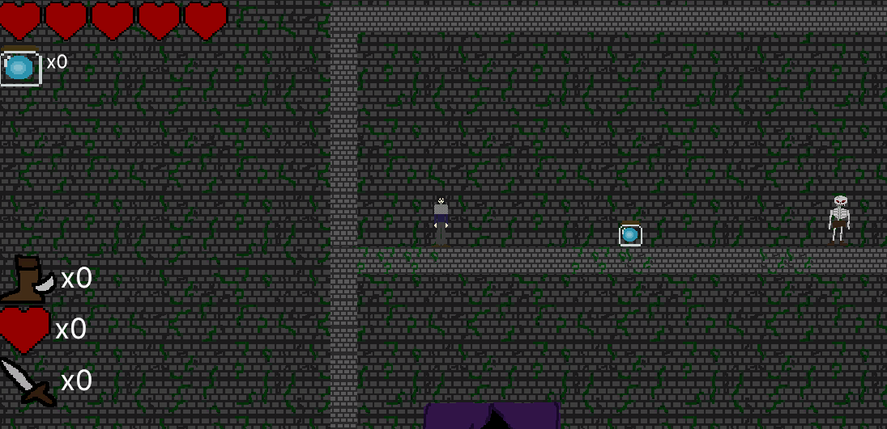

I am a gameplay programmer currently attending Illinois State University for Game Design. I ahve experience in Unity, C#, and Java.
Unity C# Platformer

Magnolia is a beginner solo project I worked on to hound my Unity C# development skills. This project showcases my understanding of the fundamentals of gameplay programming. In this project, I implemented input with the Unity Input System, UI through the Unity UI Toolkit, as well as basic programming skills.
Unity C# UI Toolkit
In this project, I used Unity's UI Toolkit to implement an intereactive recreation of the User Interface from The Legend of Zelda: Ocarina of Time 3D. I heavily used the UI Toolkit to place the assets and designs in their proper place. I used C# to make the HUD, item, and map screen fully interactable.